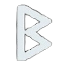
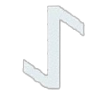
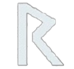

The Fehu rune (ᚠ) symbolizes wealth, prosperity, and self-sufficiency, representing not just material wealth but also the energy and effort required to achieve it. Historically linked to cattle, a measure of wealth in ancient times, it emphasizes independence and the responsible use of resources. Fehu is often used in divination to indicate financial success, growth, and opportunities, while in magic, it aids in manifesting wealth and protecting resources. When reversed, it may signal financial loss, stagnation, or mismanagement, urging caution and reevaluation. Overall, Fehu encourages prosperity, growth, and the wise management of resources.

The Othila rune (ᛟ) represents inheritance, ancestral heritage, property, and family legacy. It is connected to one’s roots, emphasizing the importance of family traditions, values, and the passing down of wealth and property through generations. Othila symbolizes stability and security, often related to land and home, while also encouraging personal growth through an understanding of one’s ancestry. In divination, it highlights matters of family and heritage, suggesting a time to honor the past and preserve traditions. When reversed, it may indicate disconnection from one’s roots or disruptions in family or property matters, urging a realignment with heritage.
The Berkana rune (ᛒ) represents growth, fertility, and renewal. It is associated with the energy of new beginnings, particularly in the context of family, motherhood, and personal development. Berkana symbolizes nurturing and the process of transformation, often linked to the natural cycles of life, such as the birth of children or the growth of a new project. It encourages healing, personal growth, and the development of ideas or relationships. In divination, Berkana signifies positive change, fertility, and the nurturing of new ventures or creative projects. When reversed, it can suggest stagnation, difficulties in personal growth, or challenges in nurturing relationships or projects.

The Algiz rune (ᛉ) represents protection, defense, and higher spiritual awareness. It is associated with safeguarding oneself from harm and seeking divine guidance or strength. Often linked to the imagery of a shield or the protective qualities of the elk, Algiz embodies the concept of spiritual defense, guarding against negative influences, and fostering a connection with higher realms. In divination, it typically signifies protection, guidance, and a time to focus on defense or resilience in the face of challenges. When reversed, Algiz may indicate vulnerability, a lack of protection, or a need to reconnect with spiritual guidance for strength and safety.
The Eihwaz rune (ᛇ) represents endurance, resilience, and transformation. It is often associated with the yew tree, which symbolizes longevity and protection, and is linked to the cycle of life, death, and rebirth. Eihwaz signifies the ability to overcome obstacles and adapt to challenges, encouraging perseverance through difficult times. It also embodies spiritual growth and the capacity for deep transformation. In divination, Eihwaz suggests a period of personal or spiritual development, resilience in the face of adversity, and the potential for profound change. When reversed, it can indicate instability, resistance to change, or a lack of strength to overcome challenges.

The Gebo rune (ᚷ) represents partnership, balance, and mutual exchange. It is associated with gifts, both given and received, and symbolizes the harmonious relationships that are based on equality and reciprocity. Gebo reflects the union of two forces, whether in personal relationships, business, or spiritual connections, emphasizing the importance of cooperation and mutual benefit. In divination, Gebo often signals a time of positive partnerships, successful collaborations, or the need for balance in relationships. When reversed, it may suggest imbalances in relationships, unreciprocated efforts, or a need to reassess how one gives and receives in connections with others.
The Raido rune (ᚱ) represents travel, movement, and journeys, both physical and spiritual. It is associated with the concept of progression, change, and the path one takes in life. Raido signifies the journey toward a goal, whether that be a literal trip, a personal transformation, or a spiritual quest. It also embodies the rhythm and flow of life, encouraging adaptability and resilience as one moves forward. In divination, Raido often indicates movement, progress, or a change of direction, signaling that a journey or new phase is underway. When reversed, it can suggest delays, obstacles in travel or progress, or a need to reconsider the current path being taken.

The Jera rune (ᛃ) represents cycles, harvest, and the fruition of efforts over time. It is associated with the natural cycles of life, particularly the seasons, and signifies rewards reaped from hard work and patience. Jera embodies the concept of change that occurs gradually, leading to a successful outcome after sustained effort. It reflects the idea of sowing seeds and eventually reaping the harvest, symbolizing both personal and material growth. In divination, Jera often indicates that a period of hard work is about to pay off, bringing positive results. When reversed, it can suggest delays, unfulfilled promises, or a need to reassess one’s efforts to align with the natural flow of cycles.